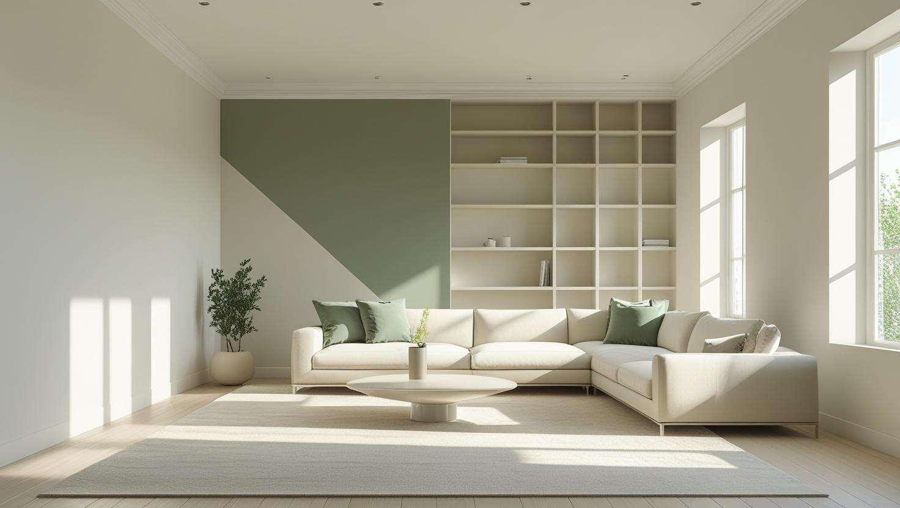
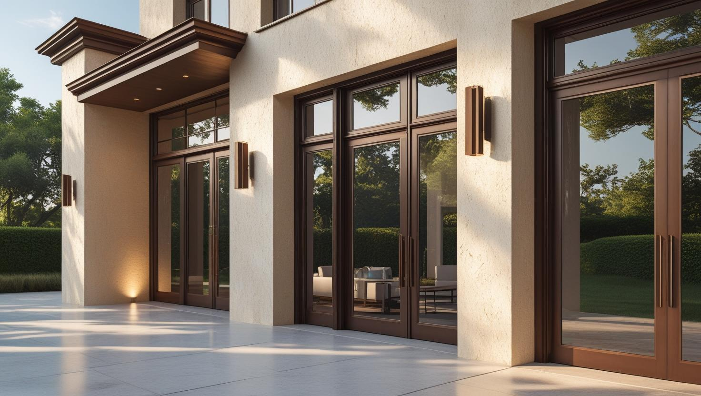
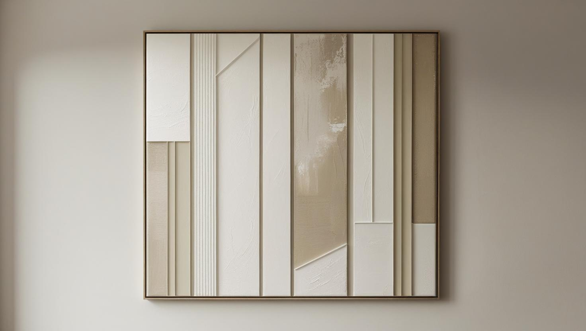

İstanbul Sultanbeyli Profesyonel Boya Ustası
20 yıllık tecrübemizle Sultanbeyli'de apartman dairesi, merdiven boşluğu ve bina dış cephesi boyası yapıyoruz. Kiracı çıkışı, eşyalı ev ya da ortak alan işinde önce ücretsiz keşif yapıp yazılı teklif veriyoruz.
Sultanbeyli'de Boya Badana: Apartman Daireleri ve Ortak Alanlar
Sultanbeyli boyacı talebinin ağırlığı apartman dairelerinde. İlçede çok katlı konut yoğunluğu yüksek; daire boyamanın yanında merdiven boşluğu ve kat holü gibi ortak alan işleri de düzenli talep ediliyor.
Yapı stoğunda sık karşılaştığımız kalemler kabarmış eski boyanın raspası, duvar ve tavan çatlakları ile ıslak hacim çevresindeki dökülmeler. Sultanbeyli boya ustası tekliflerini karşılaştırırken bu hazırlık kaleminin dâhil olup olmadığına bakmak gerekiyor.
Kiracı değişimi boyası da sık aldığımız işler arasında; boş dairede iş belirgin biçimde kısalıyor.
Hizmetlerimiz

İç Mekan Boyama
Daire boyamada duvar ve tavanın yanında kapı, kasa ve süpürgelik gibi yüzeylerin işe dahil olup olmadığını teklif aşamasında netleştiriyoruz. Kiracı çıkışında boş dairede, oturulan evde ise eşyaları örterek oda oda ilerliyoruz.
- Kabaran boyanın kazınması ve sıva tamiri
- Banyo ve mutfak için neme dayanıklı boya
- Kiracı çıkışında boş daire boyası
- Kapı, kasa ve süpürgelik boyama

Dış Cephe Boyama
Apartman dış cephesi bütün kat maliklerinin ortak alanıdır; bu yüzden iş, yönetimin topladığı karar ve bütçeyle başlar. Teklifte cephe tamiri, iskele ve boya sistemini ayrı kalemler olarak gösteriyoruz.
- Kat malikleri toplantısı için kalem kalem teklif
- Çatlak, dökülen sıva ve derz onarımı
- Saçak, balkon altı ve korkuluk boyası
- Bina girişi ve bahçe duvarı boyası

Dekoratif Boyama
Salonun tek bir duvarında vurgu rengi ya da hafif bir doku, bütün evi yeniden boyatmadan görünümü değiştirir. Çocuklu evlerde dokulu yüzey yerine silinebilir renkli bir duvar daha pratik olabilir.
- Salonda tek duvar vurgu rengi
- Hafif dokulu dekoratif boya uygulaması
- Çocuk odasında silinebilir renkli duvar
- Kartonpiyer ve tavan göbeği boyama
Fiyat Tablosu
| Hizmet Türü | Metrekare Fiyatı | Ortalama Süre (100m²) | Garanti |
|---|---|---|---|
| İç Cephe Boyama | 100-200 TL | 2-3 Gün | Uygulama kapsamına göre |
| Dış Cephe Boyama | 150-280 TL | 3-5 Gün | Uygulama kapsamına göre |
| Dekoratif Boyama | 250-500 TL | 4-7 Gün | Uygulama kapsamına göre |
| Ofis Boyama | 120-220 TL | 2-4 Gün | Uygulama kapsamına göre |
Metrekare fiyatları yaklaşık ön değerlendirme aralığıdır. Uygulanacak ölçüm yöntemi, boyanacak alanın kapsamı, yüzey durumu, tamirat ihtiyacı, kat sayısı ve malzeme seçimi keşif sırasında netleştirilir.
Dış cephe boya fiyatları uygulama alanı için yaklaşık 150–280 TL/m² aralığındadır. Kesin hesaplama yöntemi ve teklif; yüzey durumu, bina yüksekliği, erişim veya iskele ihtiyacı, tamirat kapsamı, boya sistemi ve uygulanacak kat sayısına göre keşif sırasında netleştirilir.
Uygulama kapsamına göre işçilik garantisi sağlanır. Garanti kapsamı ve istisnaları teklif veya iş sözleşmesinde belirtilir.
Bu rakamlar İstanbul Boyacılık'ın 2026 gösterge fiyat aralığıdır. Bir piyasa ortalaması değildir. Kesin fiyat; yüzey durumu, hazırlık ve tamirat miktarı, uygulanacak kat sayısı, seçilen malzeme sınıfı, ulaşım ve kat koşulları ile evin eşyalı mı boş mu olduğu keşifte görüldükten sonra belirlenir.
Sultanbeyli'de aralığı yukarı taşıyan ana kalem çıkan tamirat miktarı: raspa, çatlak ve tavan onarımı. Boş ve yüzeyi sağlam dairelerde iş aralığın alt tarafında kalabiliyor.
Sultanbeyli'de Banyo ve Mutfak Duvarında Dökülen Boya: Önce Nedeni Bulmak
Islak hacim çevresinde kabaran ya da dökülen boya çoğu zaman yüzeyin değil, arkadaki nemin sorunudur. Bu duvarlarda işe boyadan önce nemin nereden geldiğini ayırt ederek başlıyoruz.
- Tesisat kaynaklı nem: Duvarın arkasındaki banyo ya da mutfak tesisatında sızıntı varsa leke boru hattı boyunca yayılır. Bu durumda boyadan önce tesisatın onarılması gerekir.
- Yoğuşma: Havalandırması yetersiz banyolarda buhar soğuk yüzeyde suya dönüşür; tavan köşelerinde ve dış duvara bakan yüzeylerde küf noktaları belirir.
- Eski boya katmanları: Üst üste uygulanmış ve nem almış boya tabaka tabaka ayrılır; sağlam yüzeye kadar kazınması gerekir.
Nem kaynağı giderilip duvar kuruduktan sonra gevşemiş sıva onarılır, uygun astar uygulanır ve banyo ile mutfakta neme ve silmeye dayanıklı bir boya seçilir. Ürün seçimi için rutubetli ve küflü duvarlar için boya rehberimize göz atabilirsiniz.
Kiracı Değişiminde Boya: Tahliyeden Yeni Kiracıya Kadar Planlama
Kiracı değişiminde boya, dairenin boş kaldığı kısa arada yapılır. Bu arayı verimli kullanmak için keşfin eski kiracı çıkmadan önce yapılması işe yarar.
- Dübel delikleri: Tablo, perde ve raf için açılmış delikler macunla doldurulup zımparalanır.
- Mobilya ve el izleri: Koltuk arkası, yatak başı ve priz çevresindeki kirler tek kat boyayla kapanmayabilir; leke tutan noktalara önce astar uygulanır.
- Renk seçimi: Açık ve nötr bir ton yeni kiracının eşyasına kolay uyar, bir sonraki boyada da renk değişimi kalemi çıkarmaz.
- Mutfak ve banyo: Buhar ve yağ lekesi tutan duvarlarda silinebilir boya, sonraki kiracı değişiminde temizliği kolaylaştırır.
Boyayı kimin yaptıracağı kira sözleşmesine ve tarafların anlaşmasına bağlıdır. Teklifi, ev sahibi ile kiracı arasında paylaşılabilecek şekilde kalem kalem yazıyoruz.
Apartman Dış Cephesi: Teklif Kalemleri, İskele İzni ve Mevsim
Dış cephe boyası tek bir dairenin değil, apartmanın ortak kararıyla yapılır; bu yüzden tekliflerin toplantıda kolayca karşılaştırılabilmesi gerekir. İskele kurulacaksa belediye izni de takvime girebilir.
- Karşılaştırılabilir teklif: Cephe yıkama, çatlak ve sıva tamiri, astar, boya ve iskele ayrı ayrı yazıldığında hangi teklifin neyi kapsadığı görülür.
- İskele ve kaldırım: Kaldırıma taşan iskele ya da malzeme alanı için ilçe belediyesinden izin istenebilir; başvurunun kim tarafından yapılacağı teklif aşamasında netleşmelidir.
- Hava koşulu: Dış cephe boyası yağışlı ve çok soğuk havada uygulanmaz; takvim hava durumuna göre esnek tutulur.
- Zemin katta dükkân varsa: Tabela ve tente çevresindeki çalışma, dükkân sahipleriyle önceden konuşulmalıdır.
Kalemlerin fiyata nasıl yansıdığını dış cephe boyama fiyatları rehberimizde bulabilirsiniz; metrekare aralığını ise yukarıdaki fiyat tablosunda görebilirsiniz.
Merdiven Boşluğu ve Kat Holünde Çalışma Düzeni
Merdiven boşluğu boyanırken apartman sakinleri merdiveni kullanmaya devam eder. Bu yüzden iş, geçişi kapatmadan ve kat kat ilerleyecek şekilde planlanır.
- Çalışmaya en üst kattan başlanır; boyası yeni biten duvar ve korkuluklar bantla işaretlenir.
- Daire kapıları, zil paneli, posta kutuları ve elektrik panosu kapakları örtülür.
- Duvarın alt bölümünde darbeye ve el izine dayanıklı, silinebilir bir boya ya da farklı renkte bir alt bant tercih edilebilir.
- Kapalı merdiven boşluğunda pencereler açık tutularak havalandırma sağlanır.
Sultanbeyli boya ustası olarak ortak alan işlerinde çalışma günlerini yönetimle birlikte belirliyor, sakinlere duyurulacak takvimi önceden paylaşıyoruz.
Sultanbeyli’de Hizmet Verdiğimiz Mahalleler
Aşağıdaki Sultanbeyli mahallelerinde daire, merdiven boşluğu ve apartman dış cephesi işleri için ücretsiz keşif randevusu planlıyoruz:
Sultanbeyli Mahalleleri
- Sultanbeyli Abdurrahmangazi Mahallesi
- Sultanbeyli Adil Mahallesi
- Sultanbeyli Ahmet Yesevi Mahallesi
- Sultanbeyli Akşemsettin Mahallesi
- Sultanbeyli Battalgazi Mahallesi
- Sultanbeyli Fatih Mahallesi
- Sultanbeyli Hamidiye Mahallesi
- Sultanbeyli Hasanpaşa Mahallesi
- Sultanbeyli Mecidiye Mahallesi
- Sultanbeyli Mehmet Akif Mahallesi
- Sultanbeyli Mimar Sinan Mahallesi
- Sultanbeyli Necip Fazıl Mahallesi
- Sultanbeyli Orhangazi Mahallesi
- Sultanbeyli Turgut Reis Mahallesi
- Sultanbeyli Yavuz Selim Mahallesi
Sultanbeyli Boyacılık Müşteri Yorumları
"Sultanbeyli iç cephe boyama hizmeti için İstanbul Boyacılık ekibiyle çalıştım. Özenli işçilik ve temiz teslimat konusunda mükemmellerdi. Kesinlikle güvenebilirsiniz."
Emel Yılmaz
Sarıgazi / İstanbul
"Sultanbeyli boyacı ustası ararken tavsiye üzerine iletişime geçtik. Dış cephe boyama işimizi zamanında ve kaliteli şekilde tamamladılar. Güler yüzlü hizmet için teşekkür ederiz."
Kerem Demirtaş
Abdurrahmangazi / İstanbul
"Ev boyama konusunda Sultanbeyli’de güvenilir boyacı bulmak zordu. İstanbul Boyacılık beklentimizin üzerinde iş çıkardı. Detaylı çalışma ve uygun fiyat için minnettarız."
Burcu Karaca
Yenidoğan / İstanbul
Faydalı Bağlantılar
Sultanbeyli boya badana planında fiyat hesabı, boya markası ve yakın ilçe seçeneklerini birlikte değerlendirmek için aşağıdaki rehberler kullanılabilir.
Sultanbeyli Boyacı Ustası — Sık Sorulan Sorular
Sultanbeyli'de kabaran boyanın üstüne yeni boya yapılabilir mi?
Yapılmamalı. Kabaran ya da pul pul kalkan boyanın üstüne sürülen yeni kat, kururken alttaki zayıf tabakayı da çeker ve ayrılma daha geniş bir alana yayılır. Gevşek kısımlar sağlam yüzeye kadar kazınır, kenarlar macunla düzeltilir ve astar uygulandıktan sonra boyaya geçilir.
Sultanbeyli'de boyacı ustası çalışırken evde kalabilir miyiz?
Çoğu durumda evet. Oda oda çalışıldığı için bir bölüm boyanırken diğer odalar kullanılabilir. Su bazlı iç cephe boyalarında da havalandırma önemlidir; evde bebek, yaşlı ya da solunum hassasiyeti olan biri varsa boyanan odada kalınmaması ve ürünün teknik dokümanındaki önerilere uyulması önerilir.
Dış cephe boyası için bütün kat maliklerinin onayı gerekir mi?
Dış cephe ortak alan olduğu için karar genellikle kat malikleri kurulunda alınır; gereken çoğunluk yönetim planına ve kararın niteliğine göre değişebilir. Tek bir dairenin kendi cephe bölümünü farklı renge boyatması da kat maliklerinin iznini gerektirebilir. Toplantıda kullanılabilecek, kalem kalem yazılmış teklif hazırlıyoruz.
Boş daire ile eşyalı daire arasında fark ne?
Eşyalı evde sürenin belirgin bir kısmı toplama, örtme ve tekrar yerleştirmeye gidiyor. Boş dairede ekip doğrudan yüzeye başlıyor, iş kısalıyor ve koruma kalemi azalıyor. İkisini de yapıyoruz.
Tavandaki su lekesi boyayla kapanır mı?
Kaynağı duran bir su lekesinin üstünü boyamak kalıcı sonuç vermiyor; leke kısa sürede geri geliyor. Önce sızıntının çözülmesi, sonra leke kesici astar uygulanması gerekiyor. Keşifte bunu değerlendiriyoruz.
Apartman ortak alanı için taksitli ödeme yapılabiliyor mu?
Ödeme koşullarını iş kapsamına göre yönetimle birlikte belirliyoruz. Teklifi kalem kalem yazılı verdiğimiz için kapsam ve tutar konusunda sonradan ihtilaf çıkmıyor.
İletişim
İletişim Bilgileri
Telefon: 0507 832 29 12
E-posta: boyaustamistanbul@gmail.com
10+ Uzman Ustamızla Sultanbeyli ve çevresine hizmet veriyoruz.
Çalışma Saatleri: Pzt-Cmt 00:00-23:59